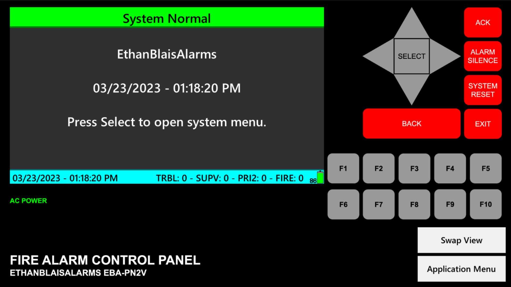

Welcome!
The EBA Virtual Fire Panel is an application built by Ethan Blais (me)! It is designed to simulate a realistic commercial fire alarm system.
The EBA Virtual Fire Panel is as realistic as possible, although a custom panel is used, along with custom sounds. All sounds are as close to the real versions as possible.
There are currently 3 main versions, and each one uses a different panel. For example, version 1 uses the EthanBlaisAlarms EBA-PN1V, which has a 40*4 character LCD, while version 2 uses the EthanBlaisAlarms EBA-PN2V, which has an 8-color display.